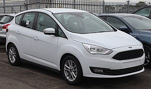

|  |
O C-Max é um monovolume compacto produzido pela Ford em Saarlouis para o mercado europeu desde 2003. Tal como o Ford Focus, utiliza a plataforma C1. Com capacidade para cinco passageiros, tem um espaço de carga generoso que pode ser aumentado dobrando os bancos traseiros. Algumas versões possuem dois bancos adicionais rebatíveis na bagageira, ficando assim com capacidade para sete ocupantes. |